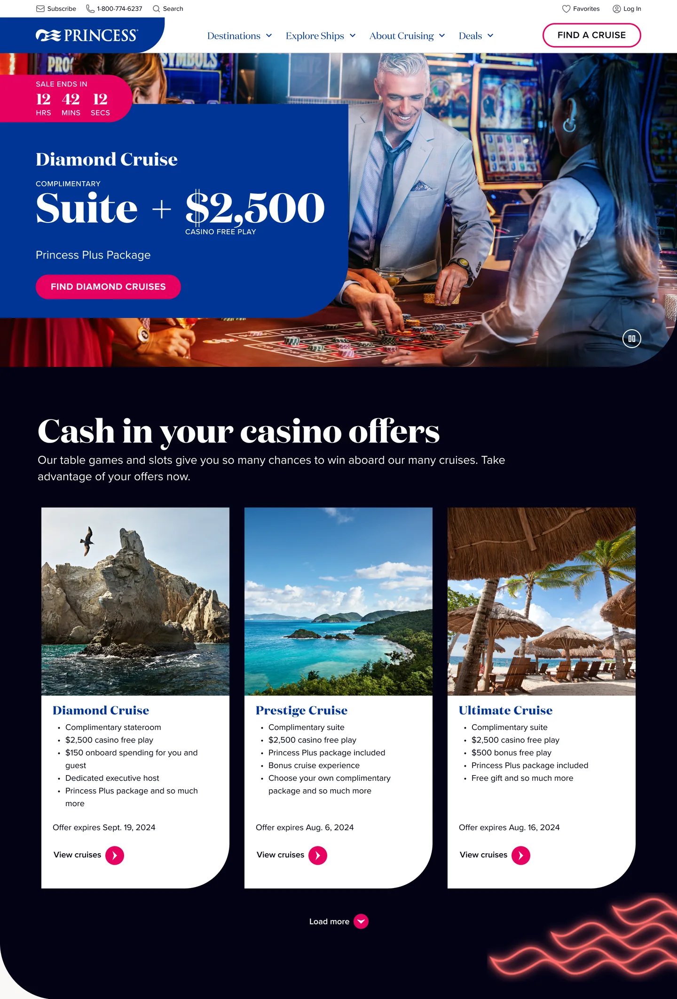
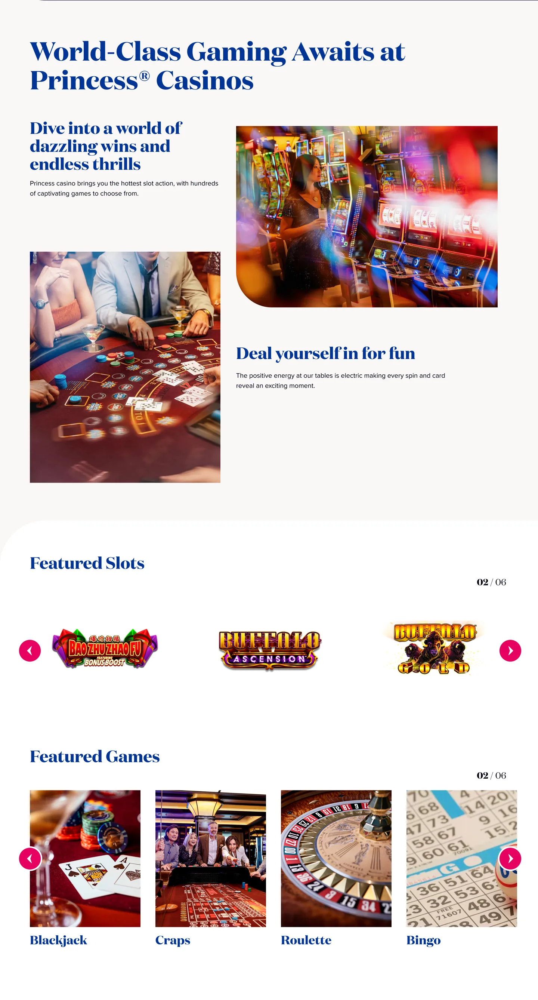
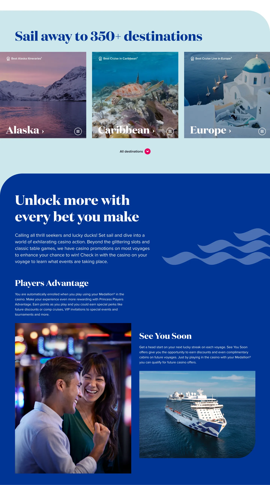
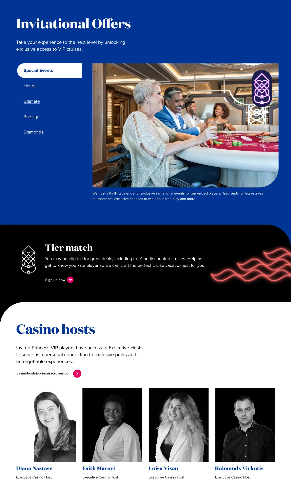
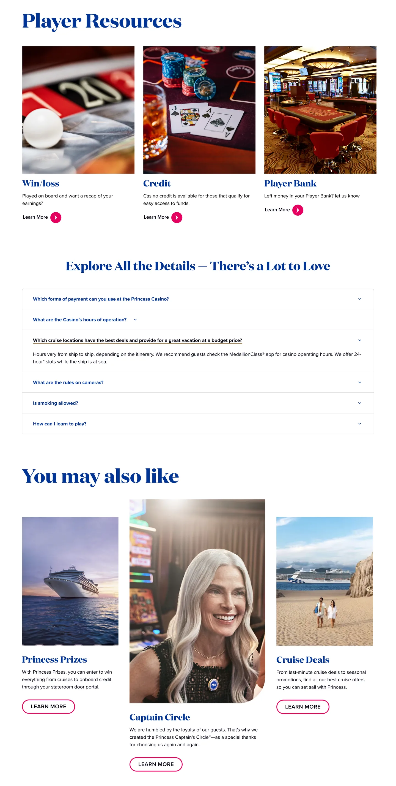

The cruising company observed a significant gap in bookings for casino-enabled cruises compared to their other offerings. Despite having world-class casino facilities on select ships, the existing website failed to highlight these experiences effectively.
The lack of targeted content and compelling visuals led to missed opportunities in attracting casino enthusiasts and converting interest into bookings.
With the rise of experiential travel and niche tourism, casino cruises represent a lucrative segment. However, the original website treated these offerings as secondary, burying them within generic entertainment pages.
The redesign aimed to reposition casino cruises as a premium experience, improve discoverability, and streamline the booking process for this audience.





Following the implementation of the redesigned casino landing page, the cruise line experienced a 31% year-over-year increase in casino-related bookings. This uplift highlighted the effectiveness of the new design in driving user engagement and conversion.
By streamlining the booking experience and integrating key features like in-page tier match verification, the redesign removed friction points and encouraged more users to complete their casino-related reservations.
The competitor analysis was the foundation that earned stakeholder alignment — having the comparison matrix made design choices defensible rather than aesthetic. I'd start every project this way.
The 24-week timeline accommodated proper discovery and leadership review cycles. Compressing this would have meant shipping a prettier page that converted no better than the old one.